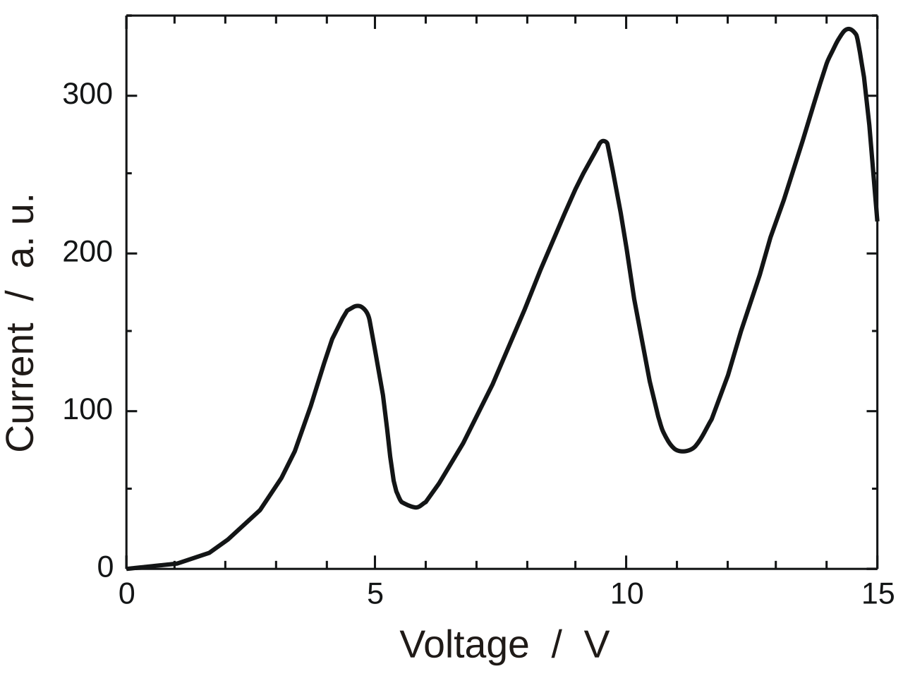
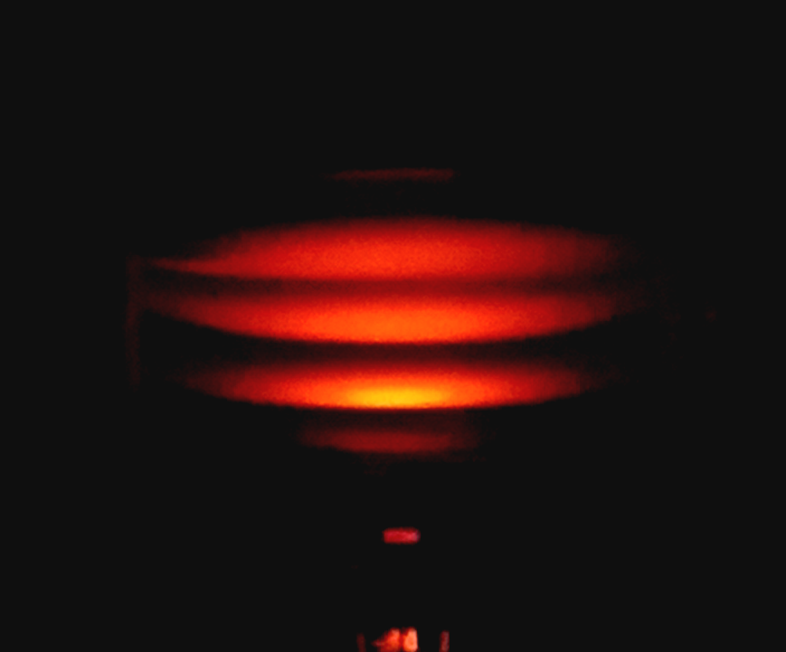

Franck–Hertz 实验虚拟仿真平台
进入仿真1
进入仿真2
实验背景
- 弗兰克-赫兹实验是一个由德国物理学家詹姆斯·弗兰克和古斯塔夫·赫兹完成的著名物理实验。这实验首先直接地证实了玻尔模型离散能级概念的正确性。1914年，他们发表了这令人信服的实验结果，对于现代量子力学被科学界接受做出重大的贡献。由于他们“发现那些支配原子和电子碰撞的定律”，弗兰克和赫兹共同得到1925年诺贝尔物理学奖。
- 在在尼尔斯·玻尔 创建的玻尔模型里，电子是绕着原子核运行于离散能级的轨道。弗兰克-赫兹实验显示出，原子的确只能够吸收（受激）特定数量的能量（量子），因此证实了玻尔原子的能级是离散的。
实验设置与结果
- 这个经典实验的主要实验器具是一个类似真空管的管状容器，称为水银管，内部充满温度在140-200摄氏度之间，低气压的水银气体。水银管内，装了三个电极：阴极、网状控制栅极、阳极。阴极的电势低于栅极跟阳极的电势，而阳极的电势又稍微低于栅极的电势。阴极与栅极之间的加速电压是可以调整的。通过电流将钨丝加热，钨丝会发射电子。由于阴极的电势高于钨丝的电势，阴极会将钨丝发射的电子往栅极方向送去。因为加速电压作用，往栅极移动的速度和动能会增加。到了栅极，有些电子会被吸收；有些则会继续往阳极移动。通过栅极的电子，必须拥有足够的动能，才能够抵达阳极；否则，会被栅极吸收回去。装置于阳极支线的安培计可以测量抵达阳极的电流。
- 当加速电压很低，小于 4.9 伏时，随着电压的增加，抵达阳极的电流也平稳地单调递增。
- 当电压在 4.9 伏特时，电流猛烈地降低，几乎降至 0 安培。
- 继续增加电压。再一次，同样地，电流也跟随着平稳地增加，直到电压达到 9.80伏特。
- 当电压在 9.8 伏特时，又观察到类似的电流猛烈降低。
- 电压每增加 4.9 伏特，电流就会猛烈降低。这样系列的行为最少继续维持至 100 伏特电压。
-

实验设置与结果
- 使用弹性碰撞和非弹性碰撞的理论，弗兰克和赫兹给予了这实验合理的解释。当电压很低时，被加速的电子只能获得一点点能量。他们只能与水银原子进行纯弹性碰撞。这是因为量子力学不允许一个原子吸收任何能量，除非碰撞能量大于将电子跃迁至较高的能量量子态所需的能量。
- 由于是纯弹性碰撞，系统内的总动能大约不变。又因为电子的质量超小于水银原子的质量，电子能够紧紧地获取大部分的动能。增加电压会使电场增加，刚从阴极发射出来的电子，感受到的静电力也会加大。电子的速度会加快，更有能量地冲向栅极。所以，更多的电子会冲过栅极，抵达阳极。因此安培计读到的电流也会单调递增。
- 水银原子的电子的最低激发能量是 4.9 eV 。当加速电压升到 4.9 伏特时，每一个移动至栅极的自由电子拥有至少 4.9 eV动能（外加电子在那温度的静能）。自由电子与水银原子可能会发生非弹性碰撞。自由电子的动能可能被用来使水银原子的束缚电子从一个能量量子态跃迁至另一个能量量子态，从而增加了束缚电子的能极，称这过程为水银原子被激发。但是，经过这非弹性碰撞，自由电子失去了 4.9 eV动能，它不再能克服栅极与阳极之间负值的电压。大多数的自由电子会被栅极吸收。因此，抵达阳极的电流会猛烈地降低。
- 假设加速电压超过 4.9 伏特，自由电子会在从阴极移动至栅极的路途中，遇到一个非弹性碰撞，失去 4.9 eV ，然后继续被加速。照着这方式，在电压超过 4.9 eV之后，电流重新单调递增。当电压在 9.8 伏特时，情况又有改变。每一个自由电子有足够的能量造成两次非弹性碰撞，失去 9.8 eV 。自由电子又无法抵达阳极。安培计读到的电流再度会猛烈地降低。电压每增加 4.9 伏特，就会发生一次这种状况，电子累积足够能量(4.9 eV的整数倍)后，造成更多次的非弹性碰撞。
仿真实验设计初衷
传统上我们使用对液态汞加热层汞蒸气进行实验，也可以采用氖气进行实验，不同样品气体的行为模式类似，但是汞蒸气比较经典，而氖气则可以肉眼观察被激发后的氖原子的退激发图像。但是由于使用汞蒸气做实验较为繁琐且不环保，国内目前没有氖管销售，国内多数实验室被迫采用氩气进行实验，我们通过虚拟仿真的形式让学生可以选择 汞蒸气 或者 氖气 进行实验，并且分别展示微观、宏观实验现象。

常见问题
- 浏览器 打不开：请通过本地服务器访问（即本页）。
- 端口被占用：编辑脚本，把
PORT=8000 改成 8001。
- 白屏：刷新一次；若仍不行，请把控制台首行报错发给我。